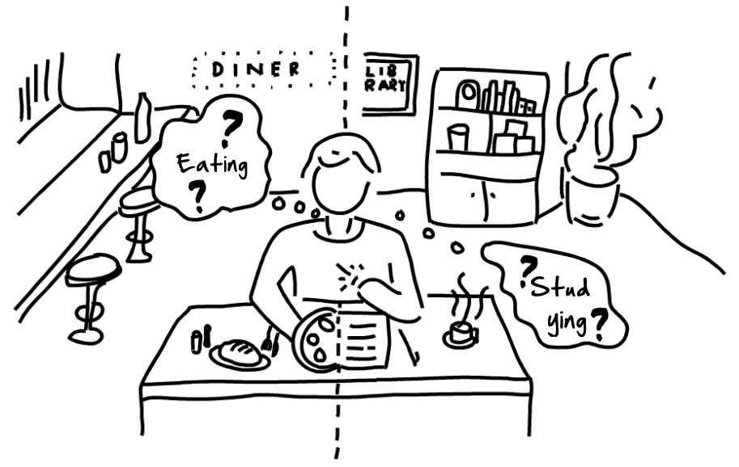
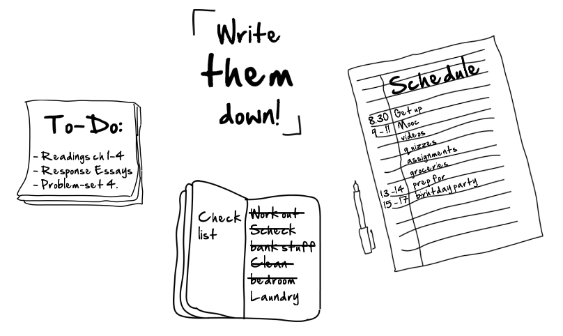
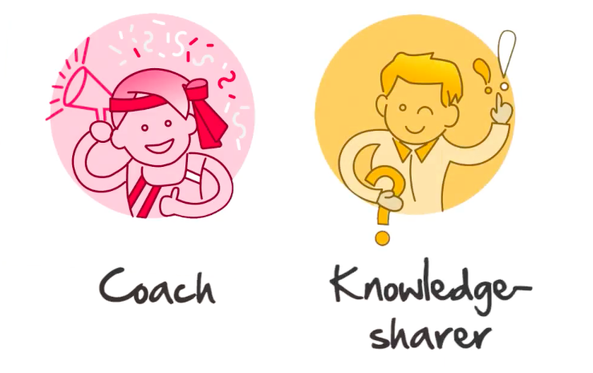

2 Your Learning Space
2.1 Physical learning space¶
Your personal learning space¶
Tip
Keep in mind, all of the tips and tricks mentioned in this chapter are customizable for your own living situation! If you find that your favorite method of focusing doesn’t fit the guidelines we give you perfectly, that’s alright. Just stick to your method if it works for you!
The following questions might help you finding a learning place where you can focus the most. Answer them for yourself and readjust your study place accordingly:
- When you’re trying to study, are you ok with loud background noise?
- Do you like being somewhere very quiet?
- Do you have a hard time focusing at nighttime?
- Do you like listening to background music?
- Do you study at a desk, or on a couch?
Your study place location¶
Summary
Location is very important when you pick a study spot. Your brain connects different places with different knowledge your mind will be focused on different knowledge in your favorite restaurant than at school.
Guideline for setting up a good study place¶
- Pick one place to study every time you log into Kiron.
- Try to study at a desk or table with a comfortable chair.
- If you use a desk or a table that you use for other activities, clear it off and clean it up for study time.
- Study with natural light or a good overhead light or desk lamp.
- If different materials are necessary for your studies like pens and pencils, paper or a calculator, gather these materials before beginning to study.
- Try to find a library which can offer you a quiet environment for studying. Apps that help you finding a quiet study place can be found here.

Illustration showing two different places and its different association in your mind.
Listening to music while studying¶
Summary
When it comes to music, it all depends on your environment and your preferences. Scientifically, a quiet environment with no music is better for focusing.
If you don’t have the ability to access a quiet study space like the library and study in a noisy, more disruptive environment, it can be helpful to listen to soft music without words.
Tip
There are different kinds of white noise and "study music" that have been created specifically for people who need to focus in a loud environment.
The following app is a well know one used by thousands of students around the world.
Coffitivity¶

Coffitivity recreates the ambient sounds of a coffee shop to boost your concentration and thereby helps you to work better. Especially if you are studying late at night. It's available for
AppName short summary of the App Android Phones free, iPhones free and Google Chrome free.
Tip
Recreates the ambient sounds of a coffee shop.
Available on 


Demonstration of the Coffitivity website in Google Chrome
Guideline for focusing at your study place¶
- Put your phone far away from you and put it into flight mode while studying.
- Don't respond to messages while studying.
- Close Facebook or any similar social media site while studying.
- Try out some of our recommended focusing apps, which help you staying focused in an easy way.
- Try to focus on completing one task at a time.
- Avoid multitasking as it actually takes away from your productivity.
- Think about why you are going to invest time today to study and what you hope to learn.
Kiron Study Center¶
Kiron has created Study Centers in some of their focus countries where you can have access to a computer, wifi, a good working space. Furthermore, you get the chance to meet other Kiron students.
Kiron Study Center Map¶
The Kiron Study Center Map lets you check if there is a Kiron Study Center next to your place, where you can study with other fellow students from Kiron. It's available for all devices free.
Tip
Enables you to find nearby Kiron Study Centers for studying together with fellow students from Kiron.
Available on 


Quick overview on how to use the Kiron Study Center Map
2.2 Mental space¶
Creating a focused mind¶
Summary
Even though you may have the most well lit, quiet and comfortable working space, your mind can still distract you and stop you from finishing your work. It's important to learn some mental techniques that you can use to create motivation, get rid of distraction, and create a balance in your mental space.
- Try to organize all your little thoughts onto paper or on your phone.
- Create separate to-do lists (e.g. one for your studies, one for your personal life).
- Cross off each to-do item on your list as this is very satisfying and lets you
- Check out some of our recommended to-do lists and time management apps.

Overview of different To-Do-Lists
Maintaining your health¶
Summary
Maximizing productive time should not mean giving up well being. This means that incorporating your daily life with your studies should make them less stressful.
How to maintain your health ...
- Spend an hour doing sports in the morning or evening.
- Get at full night's sleep rather than studying for another hour.
Tip
If you follow those tips you are more focused and more motivated, and thus can keep going better, in a more efficient and sustainable way.
Taking breaks¶
Summary
Scheduling time for breaks is very important. If you are focusing completely at a task, you need to give your brain a rest every so often.
Every time you complete an exercise of finish a chapter of a MOOC give yourself 10 minutes of rest time to ...
- look away from the computer,
- go for a walk,
- stretch yourself,
- or do a breathing exercise.
Kiron Services¶
Summary
As you adjust to being a student it is common to face difficulties in managing stress, timing, and outside responsibilities. Kiron wants to help ease that transition into student life with various Krion Services which are all overed to you for free.
Direct Academics¶
Direct Academics offers you module-based tutorials which supplement the MOOCs in a module with interactive live-teaching sessions. Here you can ask questions about the difficult parts in your regular courses and receive valuable additional input.
More information about the Direct Academics service can be found here in the Kiron Campus.
Language Schools¶
Language is an essential part of your studies. On the one hand you will need a suitable level of language proficiency in English for studying at Kiron. On the other hand, you need to learn quickly the language of your host country for everyday life as well as for a future enrollment in a university.
To support you in achieving the necessary language skills, the Kiron Language School offers you access to a selection of online and offline courses from our partners.
More information about the Kiron Language School can be found here in the Kiron Campus.
Student Community¶
Kiron is a big community of students from different countries, origins, ages and cultures. We encourage you to connect with each other - either online in our Kiron Forum or offline in the regional groups together with other local students.
More information about how to engage with Student Community can be found here in the Kiron Campus.
Study Centers¶
Study Centers are of major importance for the success of the Kiron study programme and address Kiron students but also refugees in the process of becoming university or Kiron students. They facilitate learning with online resources by providing access to internet and hardware.
More information about how to engage with Student Community can be found here in the Kiron Campus.
Mentoring¶
In our mentoring programs you get paired up with an employee from one of our partner companies, who will act as your personal mentor and will share their expertise with you.
More information about the Kiron Mentoring program can be found here in the Kiron Campus.
The Buddy Program¶
A Buddy will be your local or online contact during their studies. He or she will introduce you to life in your new country and support you in overcoming cultural and everyday challenges. From language tandems to football buddies, cooking sessions to museum visits, you and your Buddy are free to engage in whatever activities you would like.
More information about the Kiron Buddy Program program can be found here in the Kiron Campus.
Counselling¶
While you study you might face a lot of additional demands in life. Not everything always works out smoothly. Sometimes, there are problems and difficulties that are too hard to overcome on your own. It is always ok to need a little help. Please, if there is a crisis that you feel you cannot handle on your own, do contact us!
More information about Counselling at Kiron can be found here in the Kiron Campus.
Career Services¶
Career Services helps you to prepare for internships and future job applications. For example, it is very common to do an internship during your studies to get practical work experience. With career services, you will get basic information on how to prepare your application.
More information about the Kiron Career Services can be found here in the Kiron Campus.
2.3 Your study community¶
Summary
Your community - those who are around you and who support you and those who are on the same journey as you are, also create a third space for you to work within while you are studying with Kiron.
In a traditional classroom used to be your encourager and your guider. They would
- help walk students through knowledge,
- answers questions,
- and challenge students to engage with the material.
Now, you will need to take accountability for this role yourself and find out how you can
use the communities already in place around you to your maximum benefit.

Connect with the student community around you, so that they can become your Coach and Knowledge-sharer as well.
Family and friends¶
Summary
Your friends and family are also an important part of your learning community.
We recommend you to ...
- have an open conversation about Kiron
- and your goals while studying with Kiron.